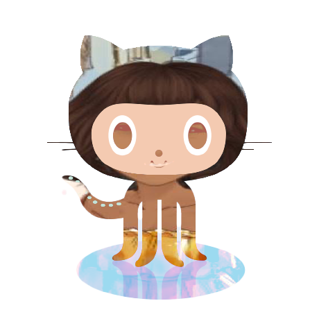

Here I used the tag h1 to create my first level title. And to add the line under the title I used the hr tag.
To create a paragraph, we use the tag p. But to avoid creating a new paragraph every time we need some space between the sentences, we can use the br tag.
I also learned to add an emoji to my text, using the following tag: &#x + an emoji code that can be found at emojipedia.org.
To mark the words with a yellow marker, I used the mark tag, which is a semantic tag. For that, I first selected the word, then pressed CMD+ALT+P and typed abb, and selected wrap with abbreviation. Then I typed mark and ENTER. This method is really simple and very practical.
I can likewise change the color of my marker by using CSS features, or by inserting a style tag and defining a background-color into the mark tag.
To make words Bold, I did the same procedure with the tag b, which is a non-semantic tag. But I can also make words bold by using the semantic tag: strong
The same procedure can be used to make italic words: we can use the i tag, which is a non-semantic one, or the semantic em tag. In order to inser a picture into my html page, I use the img tag. As I am using the Visual Studio Code, I need just type img and press enter, so that all the command is writen. Inside the "", I should start writing the name of my photo file and press enter to select the file, which is suggested by the program itself.This is the Maluoctocat: (so ugly the poor thing :)

And this is how I create a list:
It's a neu day! And today, as always, i learned something new: how to add quotes or quotations to my text.
There are two different types of quotations: The simple ones and the composed ones. To make a simple cotation I use the q tag, as follows:
My mom always says: You should always pray, my dear!
A complete quotation contains the virtual address where it can be found. For example:
According to Keith Schengili-Roberts, we should
write a code so that it can be easily understood later.which does not appear in the html text but should be used in order to preserve the author's copyrights.
That's really super interesting and super easy!. To create an external link, i.e a link to another home page, I can wrap sentences with the a tag. For example by doing so: you can also visit my public repository on GitHub. After the href= I should type the domain. In order to make this new homepage open in a separate window,I should add: taget="_blank external" just before the domain.